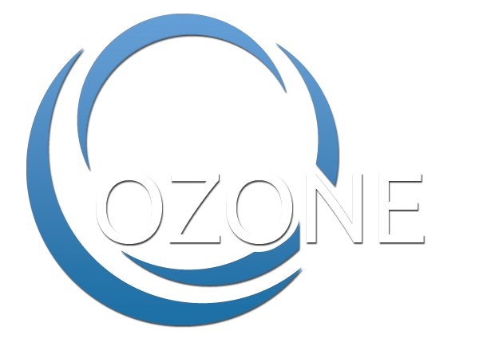

   <nav class="navbar navbar-inverse navbar-fixed-top" role="navigation">
       <div class="container" style="padding-bottom: 5px;">
	   <div>
	     <a href="index.html"></a><a style="color:#FFF" href="index.html">Open Source Development</a>
           </div>
		<div style="align:right">
		<!--<a href="faq.html" style="color:#777">FAQ</a>-->
		</div>	
	</div>
       <!-- /.container -->
   </nav>
